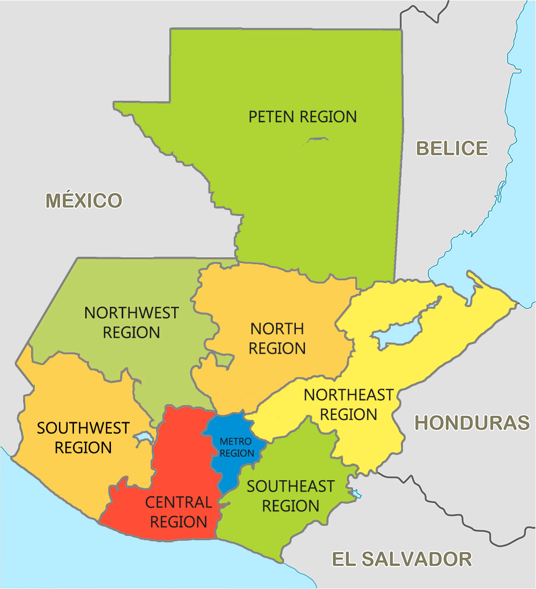
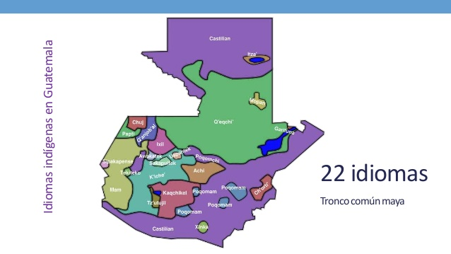
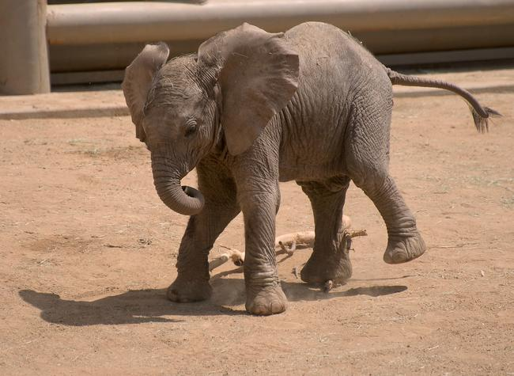
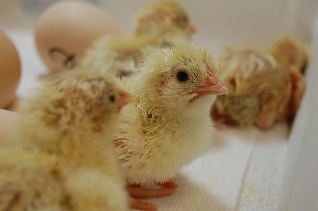

Sabias que el nombre de Guatemala, proviene de la lengua Náhualtl, la cual se traduciria a Quuahtlemallan que significa "lugar de muchos arboles", nombre que asienta perfectamente debido a la gran cantidad de bosques
con los que cuenta el país

Division del pais
El pais se divide en 22 deparatamentos y tres relieves, la primera es la regíon de Petén, las Tierras Altas de la región central y la region del sur, además se divide en ocho areas metropolitanas, las cuales son:
Metropolitana
Norte
Nororiental
Suroriental
Central
Suroccidental
Noroccidental
Petén

Idiomas del país
El idioma oficial de Guatemala es el español, sin embargo cuenta con una diversidad de idiomas que se hablan
alrdedor del pais, los cuales llegan a ser aproximadamente 25. Dentro de los mas famosos estan Xinca, garifuna y mam
Datos curiosos de animales
Osos Panda
Un oso panda puede pasar hasta 12 horas al día comiendo para suplir sus necesidades alimenticias. Tiene que comer al menos 12 kilos de bambú diarios para poder estar satisfecho

Elefantes
Al igual que ocurre con los bebés humanos, los elefantes cuando son pequeños se chupan la trompa como señal de afecto

Pollos
Los pollitos pueden comunicarse con sus hermanos y su madre cuando están dentro del cascarón